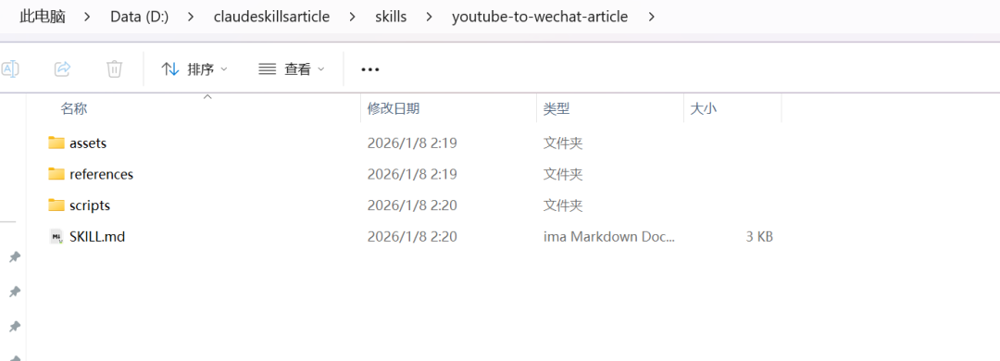
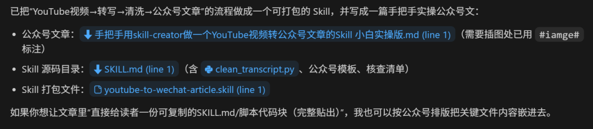
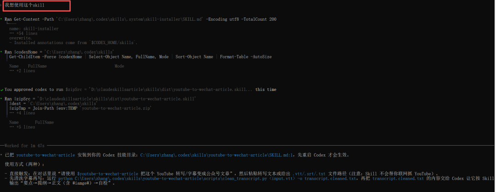
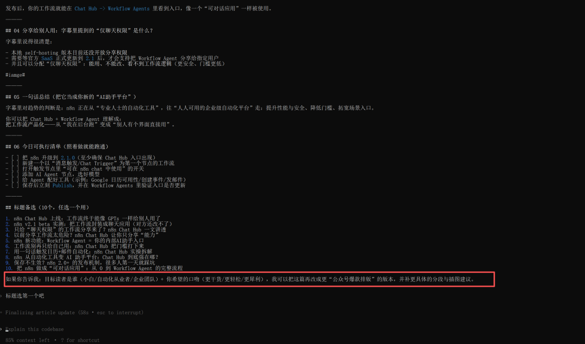

大家好，我是田心
昨天看了私信，有小伙伴让我出一个claude skill的使用教程。我觉得官方文档已经写的很详细了，要我写一个喂饭式的教程，我也觉得没必要。毕竟，使用agent skills,有手会打字就行了。
所以今天就针对一个我自己使用场景带下大家走下亲手做一个skill的流程。
当你刷到一个YouTube视频，内容很顶：观点清晰、案例扎实、表达还特别顺。
但你想把它变成自己的公众号文章，通常会卡在三件事：
字幕/转写太乱：时间戳、口头禅、重复句
写作没结构：写着写着跑题，读者看不下去
不敢发：怕引用不准、怕“搬运”风险
这篇文章就用一个具体场景，带你亲手做一个自己的Skill：
输入：YouTube字幕/转写（.vtt/.srt/复制的文字）
输出：一篇可发布的公众号Markdown文章（含#iamge#插图位置）
而且我们不用“玄学提示词”，直接用skill-creator把流程固化成一个技能包。只要有手会打字就能定制自己的skills
01 你今天能得到什么？
跟着做完，你会拥有一个技能，得到自己的skill,里面至少有：
SKILL.md：这张技能卡的“使用说明”（触发条件+工作流）
scripts/clean_transcript.py：一键清洗字幕/转写（去时间戳、去噪）
assets/wechat-article-template.md：公众号文章模板
references/factcheck-and-copyright.md：发布前自检清单（事实核查+版权风险）
dist/*.skill：可分发的打包文件

02 做Skill，先把场景拆成“可复用流程”
这个过程是claude code帮你做，你做个审核就行，没问题就叫它帮你生成
其实我就是把我的任务告诉claude code
我想来想，就教大家用skill-creator去自定义一个自己的skill。比如看到youtube上有很好的一个视频素材，然后把它转换成文字，转为自己的公众号文章。你能把这个过程变成skill吗？
然后他就会一顿分析，把“视频→文章”拆成5步，讲解它是怎么做Skill：
拿到转写：复制YouTube transcript 或下载.vtt/.srt清洗转写：去时间戳、去口头禅、合并重复提炼要点：10–20条要点 + 需要核实的点先提纲后成文：先结构，后正文发布前自检：事实/引用/版权/可读性
我看了下，可行，啥也不用改，全部交给它就行(这里运行的过程有点长，我就不截图了），它自己就跑完了。

03 怎么拿到YouTube转写？（小白最省事的两种）
方法A（最简单）：YouTube自带“Show transcript”复制
打开视频 → 找到“Show transcript/显示转写稿”
复制整段转写文本
方法B（更稳定）：拿到字幕文件（.vtt/.srt）
如果你能下载到字幕文件（自动字幕也行），优先用.vtt/.srt
好处：结构更规整，后面清洗更稳定
（不同人环境不同，这里不强行指定工具，你只要能拿到文字稿就行。）
04 你怎么用这个Skill？（最小可用的实操口令）
你就直接说我想使用这个skill

帮我把youtube字幕变成公众号文章，字幕是：C:\Users\zhang\Downloads\n8n上线Chat Hub！工作流秒变GPTs、仅使用权分享终于实现了 [Chinese (Simplified)] [DownloadYoutubeSubtitles.com].txt
当然你也可以更规范一点，在对话里这样使用（示例输入模板）：
我要把一个YouTube视频做成公众号文章。视频标题：xxx目标读者：职场小白口吻：轻松但专业长度：1200-1800字我已准备好转写：见 transcript.cleaned.txt要求：不能虚构数据，不确定要标“需核实”，需要在关键位置插入#iamge#。
05 迭代：让这个Skill越用越像你
每次用完只做一件事：把你不满意的点写回Skill。
太空 → 在规则里加“每节至少1个例子”
太长 → 加“每段≤120字”
太像搬运 → 加“必须增加你的框架/评论/落地清单”
你会发现：一个月后，你写公众号的速度和稳定性会完全不一样。
学会了吗？其实定制一个agent skill就是这么简单，哈哈哈。我在写公众号文章方面又可以偷懒了
好啦，以上的分享就到这里了！如果你觉得有收获，关注+点赞+在看！
我是田心，一名测试职场人，专注AI智能体和AI编程，工信部认证的AIGC导师，愿一路成长与1000人同行在AIGC拿到结果。